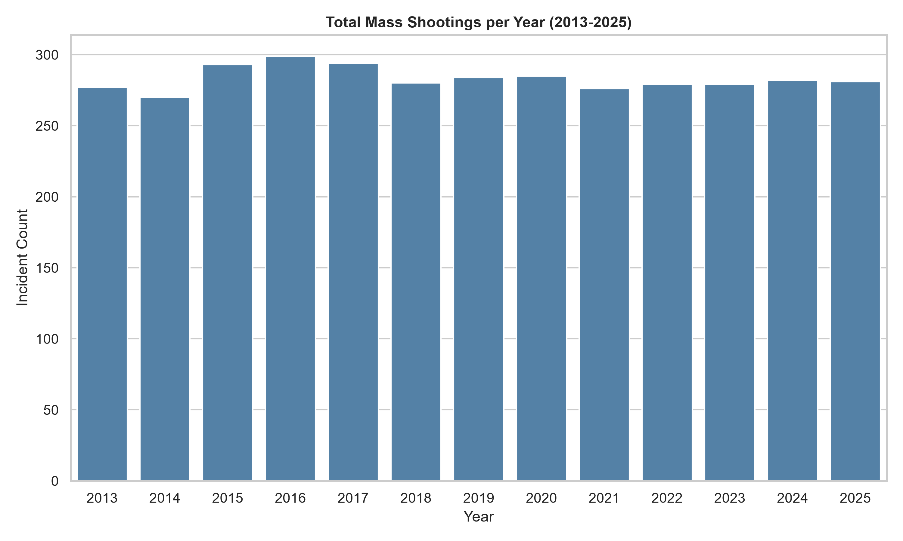
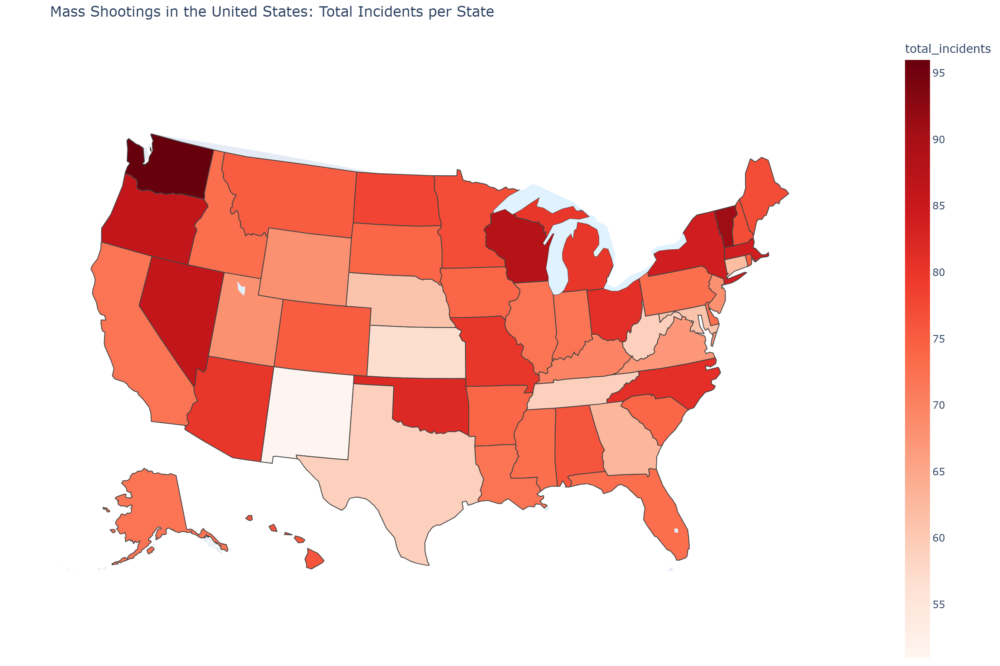
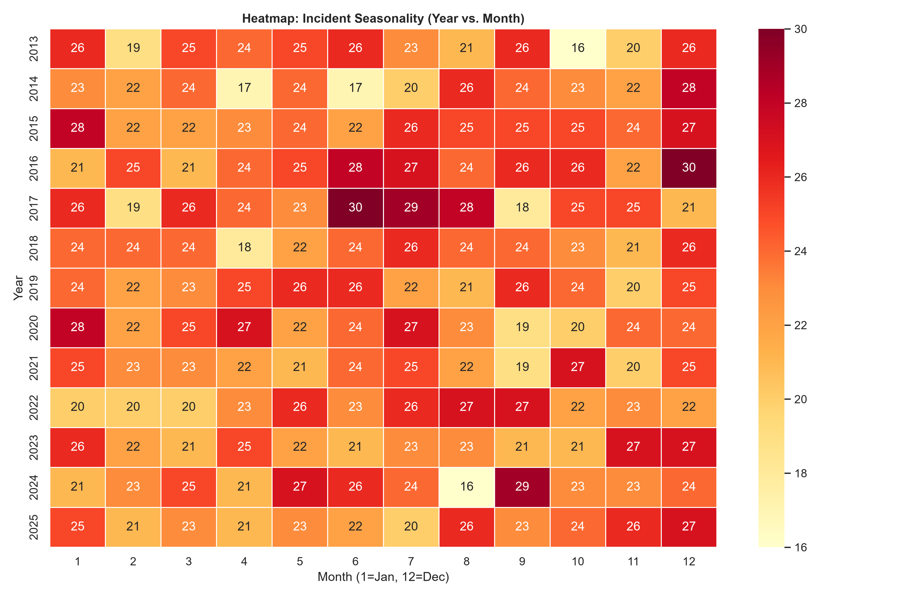

This document presents a comprehensive, bottom-up exploratory data analysis (EDA) intended to characterize the dataset, evaluate underlying distributions and data quality, and establish a foundational visualization strategy[cite: 2].
The following schema definitions fulfill the requirement to classify each field's typology, domain, spatial/temporal nature, and precision parameters[cite: 1, 2].
| Field Name | Data Type / Subtype | Kind | Domain & Value Range | Unit / Precision | Update Frequency |
|---|---|---|---|---|---|
incident_id |
Numeric (Integer) | Identifier | Positive integers ( $\mathbb{Z}^+$ ) | 1 (Exact) | Daily |
date |
String (ISO 8601) | Temporal | 01/01/2013 – 12/31/2025 | Day (YYYY-MM-DD) | Daily |
location / city |
String (Categorical) | Geographical | US Municipalities / Locales | Exact string match | Daily |
state |
String (Categorical) | Geographical | 50 US States + DC | 2-letter abbreviation | Daily |
killed |
Numeric (Integer) | Metric (Count) | [0, 60+] | 1 Person | Daily |
wounded |
Numeric (Integer) | Metric (Count) | [0, 400+] | 1 Person | Daily |
shooters |
String (Categorical) | Metadata | "Unknown", "1", [Names] | N/A | Variable |
An examination of the data's topological and statistical properties reveals distinct patterns critical for downstream modeling[cite: 1, 2]:
killed and wounded) are bounded at zero and heavily right-skewed. Rather than a standard Poisson distribution, these count metrics exhibit significant overdispersion (variance $\gg$ mean). They are best modeled using a Negative Binomial distribution, reflecting the underlying heterogeneity of mass casualty events where the baseline probability of an event occurring is decoupled from the conditional magnitude of the event once it begins.killed and wounded is positive but non-linear. The lethality ratio (Killed / Total Casualties) varies drastically based on the weapon utilized and the indoor/outdoor nature of the venue, serving as a latent variable that must be inferred through spatial contexts.A rigorous evaluation of data integrity highlights several structural challenges[cite: 1, 2]:
shooters field is frequently missing. This is not Missing Completely at Random (MCAR); it is likely Missing Not at Random (MNAR), as incidents related to gang violence or immediate suspect evasion are disproportionately less likely to have confirmed shooter identities in initial reporting compared to high-profile lone-actor events.Identifying and handling outliers in this dataset requires a domain-specific approach[cite: 1, 2]. In many data science contexts, extreme outliers (e.g., $z > 3$) are candidates for Winsorization or exclusion to normalize distributions. Here, extreme events (such as the 2017 Las Vegas shooting or the 2016 Orlando nightclub shooting) are the primary objects of interest.
These outliers exist in the extreme right tail of the distribution. Applying Extreme Value Theory (EVT), specifically the Generalized Pareto Distribution (GPD), is appropriate for modeling the tail behavior of these high-lethality events. Standard measures of central tendency (mean) are highly distorted by these outliers; therefore, exploratory reporting must rely on the median, Interquartile Range (IQR), and Median Absolute Deviation (MAD) to describe typical events, while treating the long tail as a distinct, critical signal rather than noise.
Based on this EDA, the final visualization architecture must move beyond simple bar charts to capture the multidimensionality of the data[cite: 2]:
wounded versus killed will utilize logarithmic scales on both axes to compress the extreme outliers, allowing for visual separation of typical incidents (clustered near the origin) from high-magnitude massacres, with bubble size mapped to total_victims.The following graphical visualizations were produced during the EDA phase to expose the underlying trends, regional concentrations, and seasonal behaviors of the dataset[cite: 2].

Description: This vertical bar chart maps the temporal aggregation of incidents on a strictly yearly basis. It is essential for determining longitudinal trends—specifically, whether the raw frequency of mass casualty events is escalating, stabilizing, or declining over the observed timeline. This single-variable distribution serves as a macroeconomic baseline for further multivariate analysis.

Description: This choropleth map translates spatial data into visual density by shading individual U.S. states based on their aggregated incident counts. This graphical approach quickly exposes regional hotspots and allows data scientists to hypothesize correlations involving state-level population densities, legislative environments, and socioeconomic metrics.

Description: This matrix-style heatmap plots years along one axis and calendar months along the other, using color intensity to represent incident volume. It is highly effective for identifying seasonal patterns (e.g., summer spikes versus winter lulls) and pinpointing precise anomalous months where clusters of events broke from historical trends.